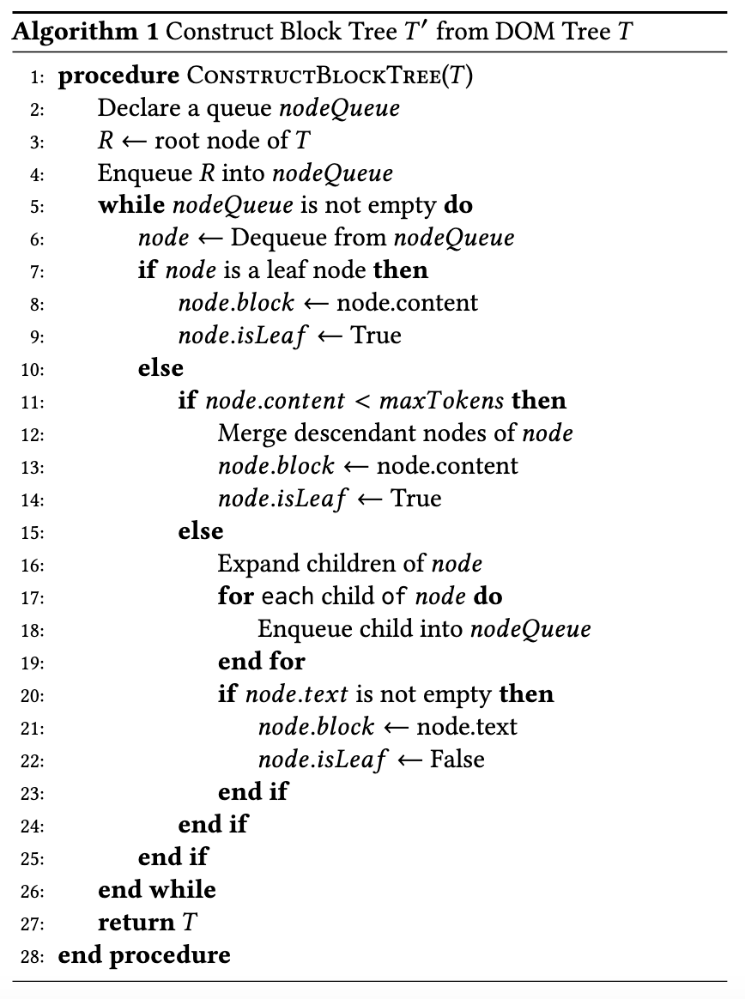
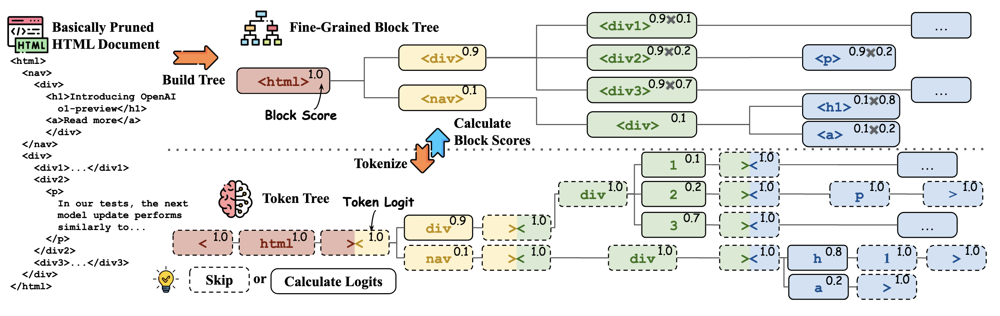

HtmlRAG: HTML is Better Than Plain Text for Modeling Retrieved Knowledge in RAG Systems¶
Jiejun Tan, Zhicheng Dou, Wen Wang, Mang Wang, Weipeng Chen, Ji-Rong We
https://arxiv.org/pdf/2411.02959
Introduction¶
LLMs have demonstrated remarkable capabilities in natural language processing tasks. However, they often struggle with forgetting long-tailed knowledge, providing outdated information, and hallucination.

For example, simplify the following
<div><div><p>some text</p></div></div>
as
<p>some text</p>
2. HTML Pruning
Building a Block Tree: Transforms the DOM tree into a block tree for efficient pruning.

<!DOCTYPE html>
<html>
<body>
<div>
<h1>Title</h1>
<p>This is a paragraph.</p>
<p>This is another paragraph.</p>
</div>
<div>
<h2>Subtitle</h2>
<p>This is a subparagraph.</p>
</div>
</body>
</html>
After the block tree is constructed, the block tree structure is as follows:
Block 1: <div><h1>Title</h1><p>This is a paragraph.</p><p>This is another paragraph.</p></div>
Block 2: <div><h2>Subtitle</h2><p>This is a subparagraph.</p></div>
The detailed pruning algorithm is as follows: 
{kind=link}
Pruning Blocks based on Text Embedding: Removes blocks with low similarity to the user’s query.

The approach involves extracting plain text from HTML blocks and calculating similarity scores with the user’s query using text embeddings. A greedy algorithm is applied to prune the block tree by removing low-similarity blocks, while preserving higher ones. The pruning continues until the total length of the HTML documents fits within the set context window. Afterward, redundant HTML structures are removed, and nested tags are merged and empty tags are eliminated.
Generative Fine-Grained Block Pruning: Further refines the block tree using a generative model.

The prompt for this step using a generative model is as follows:

Experiments and Results¶
HtmlRAG was tested on six QA datasets, including:
ASQA: a QA dataset consists of ambiguous questions that can be answered by multiple answers supported by different knowledge sources;
HotpotQA: a QA dataset consists of multi-hop questions;
NQ: A QA dataset containing real user’s queries collected by Google;
Trivia-QA: a QA dataset containing real user’s questions;
MuSiQue: A synthetic multi-hop QA dataset;
ELI5: A long-form QA dataset with questions collected from Reddit forum.
Conclusion¶
HtmlRAG demonstrates that using HTML as the format for retrieved knowledge in RAG systems is more effective than plain text. It retains richer semantics and structure, leading to improved performance. This work opens a new direction for research and provides a simple yet effective solution for processing HTML in RAG systems.
Future Works¶
As LLMs continue to evolve, HTML’s suitability as the format for external knowledge is expected to grow. Future work may develop better solutions for processing HTML in RAG systems, further enhancing the capabilities of LLMs.